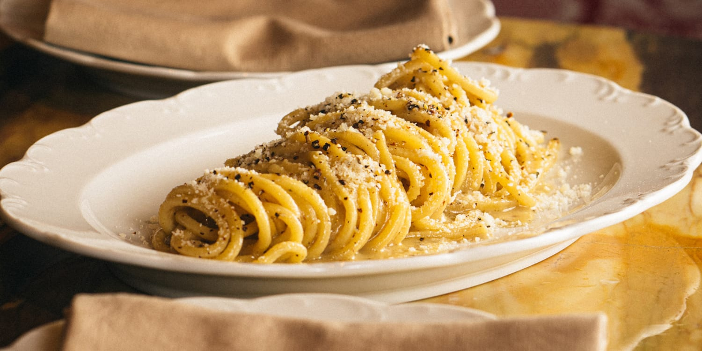

Cacio e Pepe

Description
Cacio e pepe, or "cheese and pepper" in Italian, is a simple pasta dish typical of the Lazio region of Italy. It consists of a long pasta topped with cheese and black pepper, creating a simple, yet hearty and tasty, comfort dish
This dish is one where you are well within your right to measure the cheese and pepper with your heart, but there are some parts of the process that you need to get right in order to create the tastiest dish possible.
This recipe has been taken from Serious Eats.
Ingredients
- 4 tablespoons extra-virgin olive oil, divided
- 1 teaspoon coarsely ground black pepper, to taste
- 1/2 pound spaghetti
- 2 tablespoons unsalted butter
- 2 ounces Pecorino Romano cheese (about one cup), very finely grated, plus more for serving
- Heat 3 tablespoons of olive oil and about a teaspoon of black pepper in a medium skillet over medium-low heat until ingredients are fragrant and pepper begins to sizzle, about 1 minute. Set aside.
- Place spaghetti (or pasta of choice) in a large skillet and cover with water. Season with a pinch of salt, then bring to a boil over high heat, prodding spaghetti occasionally witha fork or wooden spoon to prevent it from clumping. Cook until spaghetti is al dente (typically about a minute less than the package recommends).
- Transfer 2 to 3 tablespoons of pasta cooking water to the skillet with the oil and pepper mixture. Stir in butter. Using tongs, lift spaghetti and transfer it to oil and butter mixture.
- Add cheese and remaining tablespoon of oil to the skillet and stir with a fork until cheese is completely melted. Add a few more tablespoons of pasta water to the skillet to adjust consistency, reheating as necessary until sauce is creamy and coats the pasta completely. Season to taste with salt and black pepper.
- Serve immediately, sprinkling with extra cheese and pepper to taste.